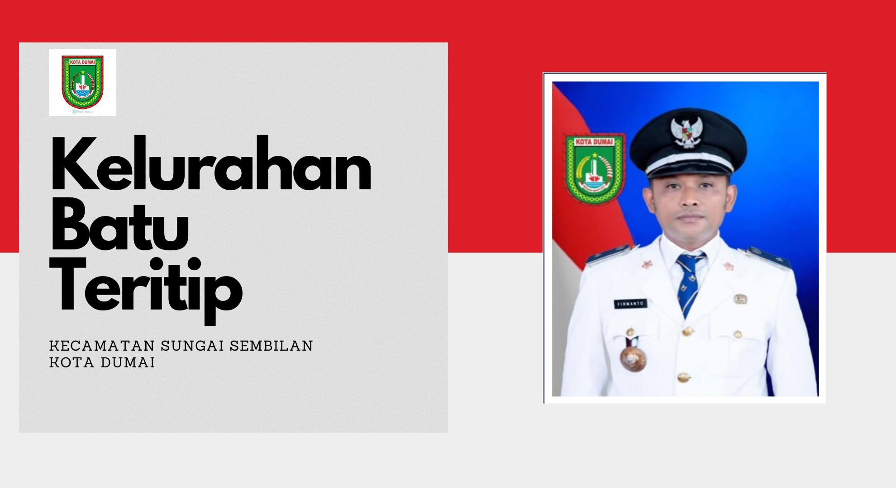

Kelurahan Batu Teritip – Informasi pelayanan, profil wilayah, dan data statistik masyarakat.
Batu Teritip adalah kelurahan di Kecamatan Sungai Sembilan, Kota Dumai, Provinsi Riau, dengan karakter wilayah pesisir dan masyarakat multietnis.
Kelurahan Batu Teritip memiliki jarak tempuh kurang lebih 3 jam dari pusat Kota Dumai. Wilayah ini terdiri dari 13 RT dengan jarak antar wilayah yang cukup berjauhan karena luasnya area. Mayoritas penduduk merupakan pendatang dari berbagai suku seperti Melayu, Jawa, Batak, Bugis, dan Minang, yang menciptakan keberagaman sosial budaya.
"Terwujudnya pemerintahan yang terbaik melalui pelayanan prima terhadap masyarakat."
Kelurahan Batu Teritip awalnya merupakan desa kepenghuluan di Kecamatan Bukit Kapur, Kabupaten Bengkalis. Setelah pembentukan Kota Dumai berdasarkan Undang-Undang Nomor 16 Tahun 1999, wilayah ini mengalami perubahan status menjadi kelurahan.
Seiring perkembangan wilayah dan kepadatan penduduk, Kecamatan Bukit Kapur dimekarkan menjadi beberapa kecamatan, termasuk Kecamatan Sungai Sembilan, di mana Kelurahan Batu Teritip berada saat ini.
Kelurahan ini memiliki luas wilayah sekitar 415,38 km² dengan karakteristik wilayah pesisir, pertanian, dan perkebunan. Sebagian besar wilayah masih berupa hutan, dengan kepadatan penduduk relatif rendah.
Infrastruktur jalan sebagian masih berupa tanah, sehingga mobilitas masyarakat dipengaruhi oleh kondisi cuaca. Transportasi utama meliputi kendaraan roda dua, roda empat, dan kapal motor pada musim tertentu.
Masyarakat Kelurahan Batu Teritip terdiri dari berbagai suku di Indonesia, mencerminkan keberagaman budaya yang harmonis dalam kehidupan sosial.